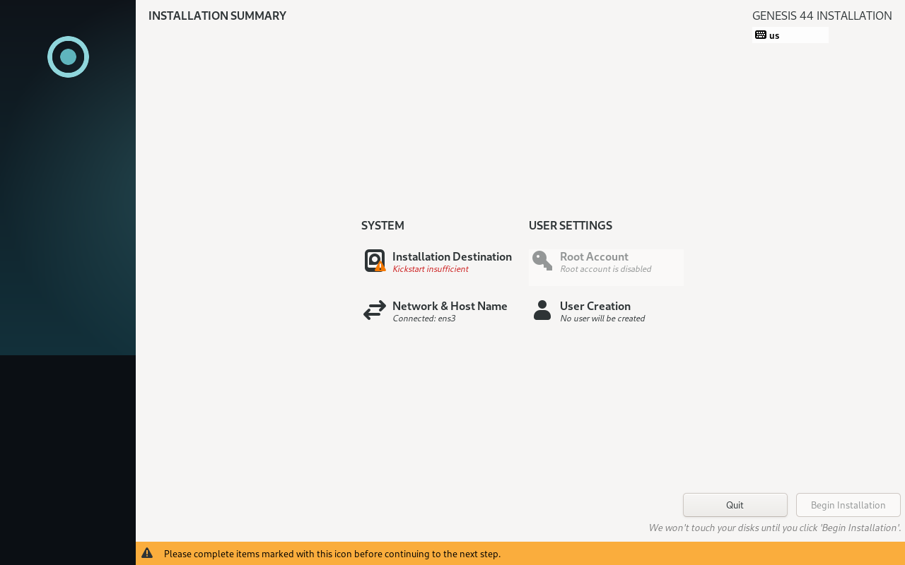
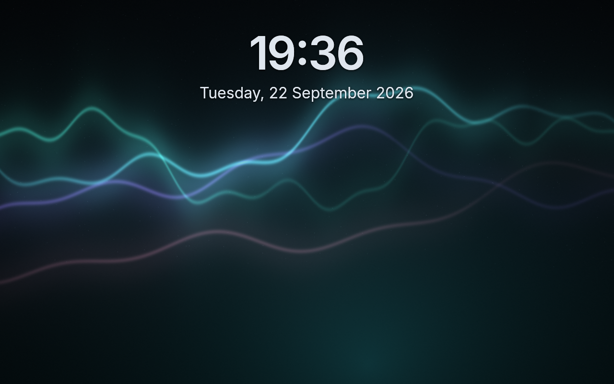
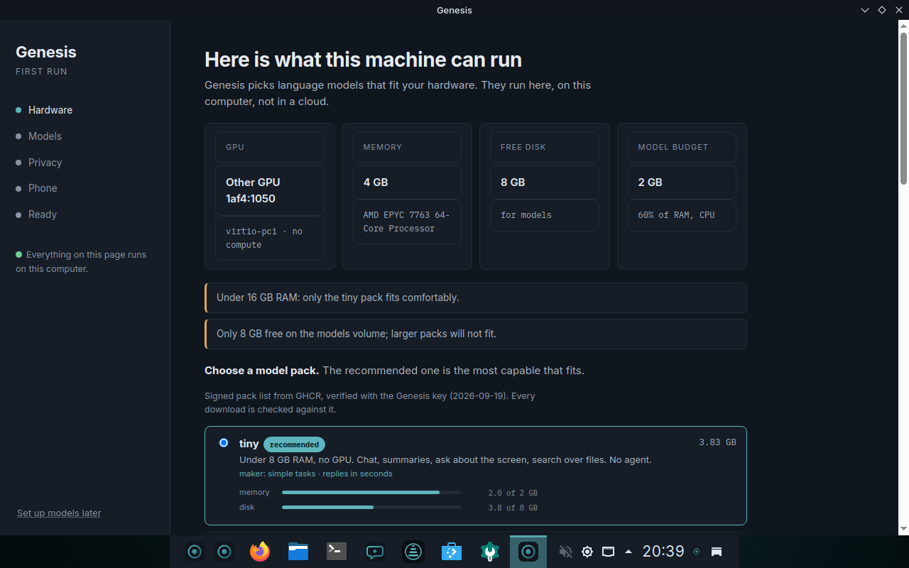
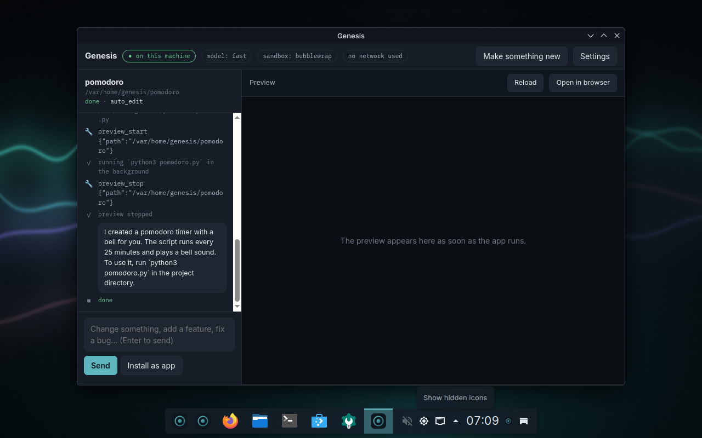
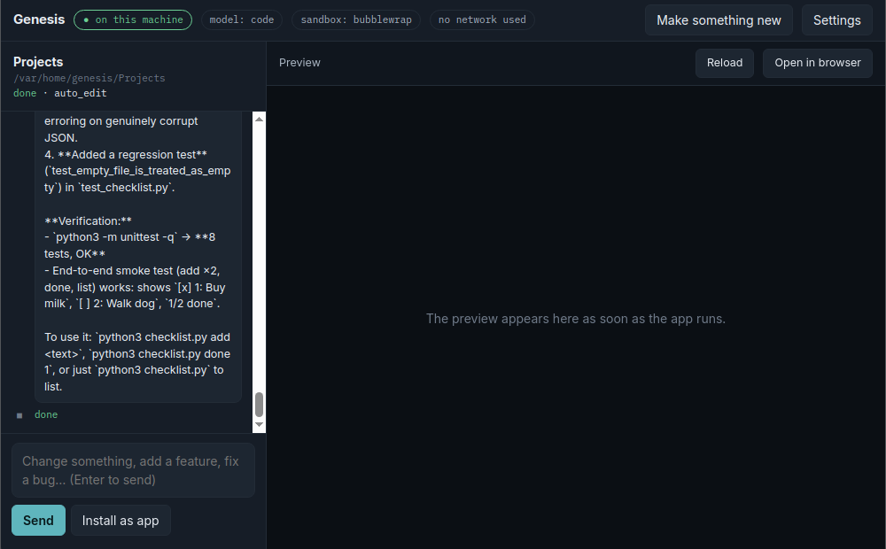
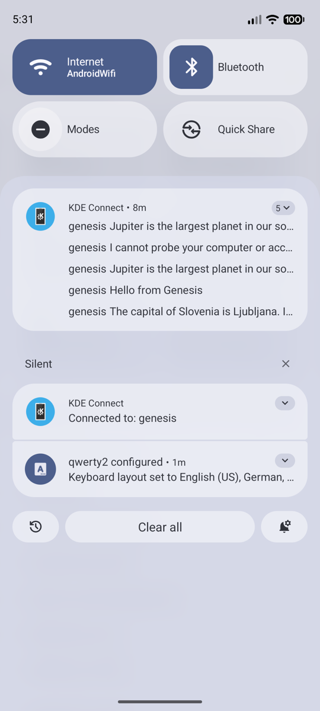
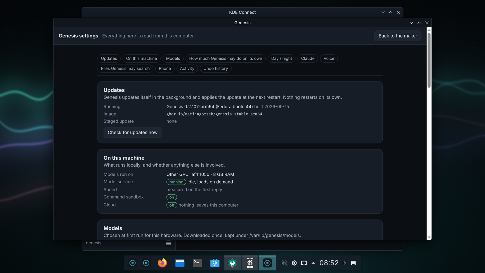

Genesis is a complete Linux desktop with an assistant that lives on the machine. This is what happens in the first hour, in the order it happens, with the moments that look wrong but aren't. Nothing here needs an account, and nothing here leaves your computer.
1Installing
Write the ISO (about 9 GB — it carries the smallest model pack, so the first boot answers offline) to a USB stick of 16 GB or more, boot from it, and the installer asks for a disk, a language and an account. It will not continue without the account — that is deliberate, because a machine with no account has no way to log in.
The installer will look stuck. It isn't. After you press Install, the bar sits at "Deployment starting" for 10 to 30 minutes while 13 GB is written to the disk. Nothing moves on screen during that time. Two ways to see it working: the disk light on the machine, or Ctrl+Alt+F3 for a console where top shows the copy running (Ctrl+Alt+F6 brings the installer back).

The installer, photographed by the build itself booting the ISO. Root is disabled; it asks for a disk and an account.

After the restart: the login screen. The look you see here follows you through the whole system.
2First run
The first time you log in, Genesis measures the machine — how much memory, which graphics, how fast it actually generates — and offers the biggest model pack that fits. Take the one it recommends. The smallest is about 2 GB and the assistant starts working the moment the first model is on disk, while the rest downloads behind it. You can use the desktop meanwhile.

First run: what this machine can run. The recommendation is measured, not guessed.
Two more questions: privacy (local only is the default; leave it) and your phone (optional — KDE Connect on the phone, same Wi-Fi, the same code on both screens; you can do it later from Settings). At the end it offers to make something. Make it or don't; the window won't come back once the machine is set up.
On a machine without a graphics card the assistant runs on the processor. It works; it is slower. Genesis measures this rather than assuming, and on the first real laptop it found the processor faster than the built-in graphics — so "no GPU" is not a downgrade, it is just what the machine is.
3The key
Meta+Space, anywhere. Type what you want in plain words and press Enter.
"a checklist app that saves to a file"
"a pomodoro timer with a bell"
"rename the photos in this folder by the date they were taken"
"why is my disk full"

The maker, having built a pomodoro timer on a fresh machine with the smallest model. Steps on the left, the thing itself on the right.
Every step shows as it happens; a preview appears when the thing runs. When it's done, Install as app puts it in the menu. The project is a folder under your home, named after what you asked for. To change it, type in the box at the bottom — "make the button bigger", "add a dark mode" — and Enter.
A step can take minutes on a machine without a GPU. The line under the steps says how long the current one has run. It is working, not stuck.
The same key answers questions. Ask about the machine, a file, a command that failed — the answer comes from the model on this computer, with the permission rules below still in force.
4When it asks, and undo
Genesis works in one of three modes, and Meta+Shift+M cycles them from anywhere:
Ask — asks before every change.
Trusted (the default) — edits the project on its own, asks for everything outside it.
Hands-off — also handles installs and your own settings on its own; things that touch the system still ask.
Before anything outside the project, a card appears with a plain verb: "Genesis wants to install a package", "wants to write to your Documents". Allow once or Not now. If you always (or never) want something, Settings › Always and never keeps the rule.

A card before it happens, in words, with two buttons. Rules, not the model, decide what can be asked at all.
Some things it never does, whatever you answer: read your keys and passwords, wipe disks, change the base system. Those are refused by the rules, not by the model's judgement.
Undo. Every job that changed something outside its project was snapshotted first. The toast after a job offers Undo; Settings › Undo history lists every job, shows what it changed file by file, and can restore one file without undoing the rest. Stop ends a running job within a second and keeps what was made so far.
5Screen, voice, phone
Meta+Shift+A draws a box on the screen and asks about what's in it — an error, a chart, a form — with a vision model on this machine. Select text anywhere and right-click for "Ask Genesis about this". Right-click a file for what can be done with it.
Meta+Shift+V listens; speak, and it sends when you pause. Replies can be read aloud; Esc stops one mid-sentence. A spoken request that would install, delete or send something is shown first and needs Enter, so a misheard word cannot act on its own.

From the phone: share text starting with "ask", and the answer comes back as a notification.
With the phone paired: share any text to Genesis starting with ask, or send a voice note, and the answer comes back as a notification. The phone can also run a few commands — lock the screen, switch day and night, apply an update, read what's in it.
6Apps
Firefox, Dolphin, Konsole, Kate, Okular, Gwenview, Haruna and Elisa are already here. LibreOffice, Thunderbird, VLC, GIMP and Krita install themselves the first time the machine is online. For everything else there is a catalogue — fifty apps, one per need, with a sentence on why — rather than a store with forty thousand:
genesis-apps # the list, with what's here marked
genesis-apps install obsidian # one word
genesis-apps search photo # the catalogue first, then Flathub
Or just ask: "what do I use for notes" gets the line, "install it" gets the app. Nothing in the catalogue changes the system: apps install for you, and the image underneath is never touched. Discover is still there if you want to browse.
7Looks
Day and night are one key: Settings › Day / night, or say "dark mode". The desktop, the terminal and the assistant switch together.
Or describe what you want:
genesis-theme make "foggy morning by the sea"
genesis-theme make "warm autumn library at night"
genesis-theme undo
Twenty seconds later every application, the panel, the terminal and the wallpaper are in a palette made for that, by the model on this machine — and undo is the look before. What it proposes is checked before it reaches the screen, so text always reads. Open terminals keep their colours; new ones take the new ones.
8When something breaks
A program crashes. A notification says so, once, and offers Ask Genesis. Pressing it hands the crash — the program, the signal, the stack — to the assistant here, which reads the journal around it and says in plain words what went wrong and whether it matters. A crash dump carries the arguments a program was given and the paths it had open, which is exactly why this stays on the machine.
A service fails. Same offer. "backup.service failed" becomes "your backup disk was not plugged in". Ten times more common than a crash and just as opaque without this.
The assistant gives a bad answer. It's a small model on your hardware; it will sometimes be wrong. The rules above mean a wrong answer can't do harm without asking first, and Undo takes back what it did.
An update broke something. Restart, and pick the previous entry in the boot menu. The image you were on is kept as the rollback, every time. Nothing to reinstall.
Something else.genesis-report prints what this machine is and how it was set up — hardware, models, what was measured — with nothing personal in it. That's the file to attach when you ask for help.
9Updates
Genesis fetches updates in the background and stages them. Nothing restarts on its own. When one is ready, a notification says what's in it — kernel, graphics, audio, what was added, which parts of Genesis changed — read off the two images on the disk, not off a website. "What is in it" hands the notes to the assistant for a plain-words version. The update applies the next time you restart.

Settings: updates, this machine, models, tools, undo history.
Your machine follows the stable channel. Stable only moves after a nightly test has taken a machine installed a week ago, upgraded it to the new image, rebooted, and checked that it boots, sets itself up and answers a question. A build that fails that never reaches you. If you want every build as it lands: sudo bootc switch ghcr.io/matijagorsek/genesis:testing.
10What leaves the machine
Nothing, by default. The models run here; the crash you ask about, the screen you ask about, the files you opt in — none of it is uploaded, because there is nowhere for it to go. Genesis makes three kinds of network connection on its own: fetching updates, downloading the model pack you chose, and installing the apps you asked for. That's the list.
The one exception is clearly labelled: Claude Code, with your own account, is one click away in the menu if you want a bigger model for a bigger job. It says so on the button, and it is off until you sign in. Every tool the assistant has is listed under Settings › Tools, and you can add your own.
11On battery
Pull the cable out of a laptop and the big models are put away; every question goes to the small always-loaded one, and the assistant gets shorter rather than quiet. Plug back in and they're allowed to load again. A desktop is left alone. If you want the big model on battery anyway: genesis-power off, once.
12Getting help
This page is also on the machine: Help › Genesis manual in the menu, no network needed. The longer reference — every feature, every key — is How to use Genesis. Things that went wrong on a real machine and what was done about them are in the decision log; if yours is new, open an issue and attach genesis-report.
Genesis is built on Fedora bootc and KDE Plasma. Everything above was checked on a real machine before it was written down; where it says a thing takes a while, that is how long it took.